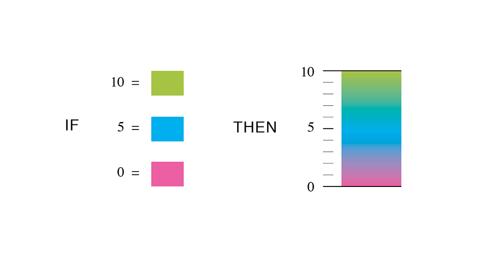

2014-05-31
Hypertext Markup Language: structures content for web browsers
Document Object Model: Hierarchical structure of HTML
<html>
<head>
<title>Page Title</title>
</head>
<body>
<h1>Title on Page</h1>
<p>Paragraph on the page.</p>
</body>
</html>
Style the visual presentation of HTML
body {
background-color: black;
color: white;
}
Dynamic scripting language that modifies web pages
<script type="text/javascript">
alert("Hello, world!");
</script>
Text-based image format
<svg width="50" height="50">
<circle cx="25" cy="25" r="22"
fill="blue" stroke="steelblue" stroke-width="3"/>
</svg>
Convert a number to a color
Where the magic happens
Select specific group of HTML or SVG elements
Select elements that don't exist yet
Powerful toolbox for creating visualizations
Jason Axelson / @bostonvaulter